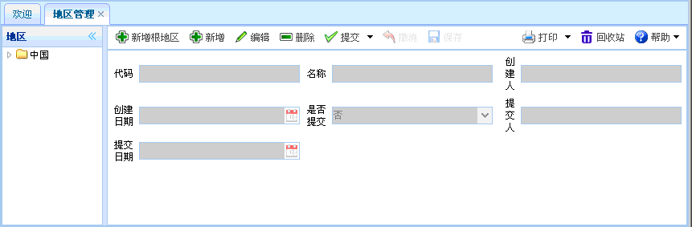
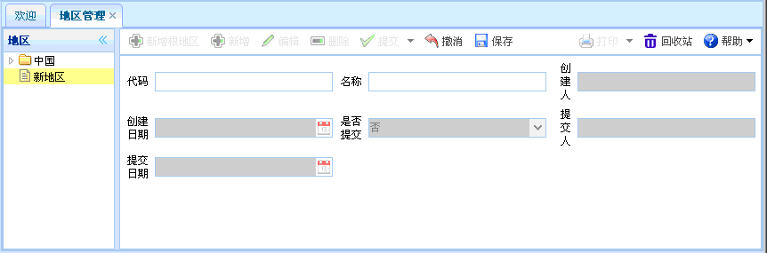
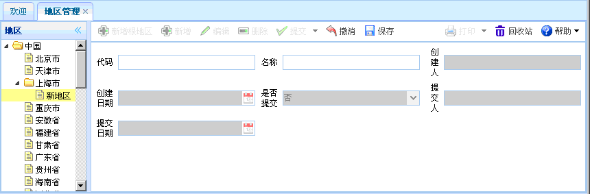
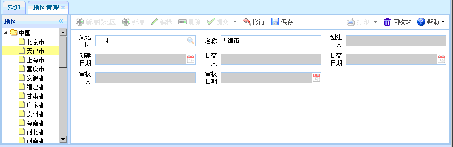

地区管理
地区管理
概述：地区管理主要是对地区（省、市等）的基本信息进行管理。
功能介绍：点击【地区管理】，进入地区管理页面，如下图所示。功能包括：新增根地区、新增、编辑、删除、提交。

图表1-sj4-1【地区管理】
图表1-sj4-1【地区管理】
【新增根地区】：点击新增根地区按钮，如下图所示。新增完毕，点击保存。新增跟地区时，灰色文本框为默认，有搜索图案的要进行查询。

图表1-sj4-2【新增根地区】
图表1-sj4-2【新增根地区】
【新增】：在地区栏中选择某个地区，为该地区新增。然后点击新增按钮，如下图所示。新增时，灰色文本框为默认，有搜索图案的要进行查询。

图表1-sj4-3【新增】
图表1-sj4-3【新增】
【编辑】：在【地区】栏中选择一个地区，然后点击编辑按钮后，出现如下图所示内容。进行编辑操作，修改完毕，点击右上方的保存按钮。编辑时，灰色文本框为默认，有搜索图案的要进行查询。

图表1-sj4-4【编辑】
图表1-sj4-4【编辑】
【删除】在【地区】栏中选择一个地区后，点击删除，即可删除该地区相关信息，已提交的信息不能删除。
【提交】在【地区】栏中选择一个地区信息后，点击提交，已提交的单据不能再次提交。
 注意事项
注意事项
1、？
2、？
3、？
 常见问题
常见问题
1、？
2、？
3、？